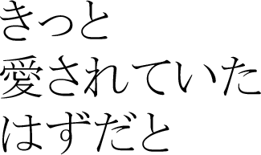

版型 上下巻組 A5版 上巻 122ページ 口絵2ページ 下巻 120ページ
価格 通販 4200円 ダウンロード販売 1050円 （終了しました）
イラストレーション 更紗（横濱レモネード）
本文 中里一
発行 西在家香織派

千葉国王。21歳。女子中学生が好き。
陸子の護衛。23歳。陸子が好き。
陸子の愛人。15歳。陸子が好き。
陸子のメイド。27歳。陸子が好き。
ひかるは陸子への愛を胸に、日々献身的に仕えている。けれどひかるには、秘密の癖がある。それは、陸子の服の匂いをかぐこと。 その癖を陸子本人に見られてしまったひかるは、陸子に誘われるままに、身体の関係へと入り込んでゆく。 そんなときに緋沙子が現れる。緋沙子は小学生のときから陸子と通じており、愛人になることを約束していた。緋沙子を快く思わない美園は、ひかるを操って緋沙子を追い払おうとする――
こちらからご覧いただけます。
終了しました。 2009年3月、小学館ガガガ文庫より、『いたいけな主人』（中里十名義）と改題して発売されます。Amazon
終了しました。